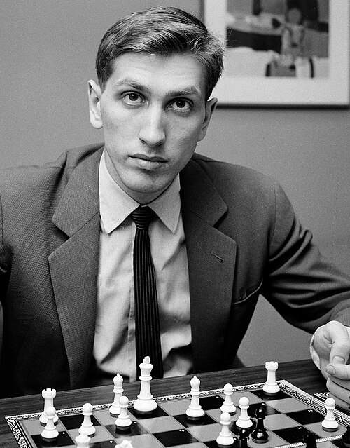

CHESS
chess.comChess is more than just a hobby for me; it is a mental sanctuary. Whenever I immerse myself in a game, the outside world fades away. All my problems and stress disappear as I focus purely on the 64 squares in front of me.
The complexity of the game demands total concentration, leaving no room for negative thoughts. It is a form of meditation through strategy that allows me to disconnect from reality.
In the world of chess, my ultimate inspiration is the legendary 11th World Chess Champion.

I admire Fischer for his uncompromising dedication and his aggressive, precise style of play. He revolutionized the game and proved that with enough will and focus, one can conquer the entire chess world.